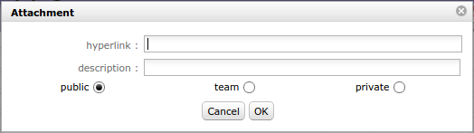

Common sections¶
Some sections are displayed on almost all screens.
Those sections allows to set information or add information to an item of the element.
Description section¶
This section allows to identify items of the element.
- Information grouped under this section are:
- Id
- Element type
- Name
- Description
- Current situation
- Stakeholder
- Objective
- Reference
- Link
Treatment section¶
This section contains information about item treatment.
Depending on the element, this section may have a different name.
- Information grouped under this section are:
- Status and Dates
- Responsible
- Link
- Outcome
- Comment
Affectations section¶
This section allows to manage resource affectation to projects.
| Field | Description |
|---|---|
| Id | Unique Id for the affectation. |
| Project | Project affected to. |
| Resource | Name of the affected resource. |
| Profile | Selected profile. |
| Start date | Start date of affectation. |
| End date | End date of affectation. |
| Rate | Affectation rate for the project (%). |
Affectation list management
- Click on
 to create a new affectation.
to create a new affectation. - Click on
 to update an existing affectation.
to update an existing affectation. - Click on
 to delete the corresponding affectation.
to delete the corresponding affectation. - Click on
 to replace resource on the corresponding affectation. (See: Replace resource on an affectation)
to replace resource on the corresponding affectation. (See: Replace resource on an affectation) - The icon
 indicates that affectation is closed.
indicates that affectation is closed.
Note
Direct access to information
- From project screen, click on the resource name to go directly to the selected resource.
- From resource screen, click the project name to go directly to the selected project.
| Field | Description |
|---|---|
| Project | Project list. |
| Resource | Resource list. |
| Profile | Profile list. |
| Rate | Rate (in %) of the affectation to the project. |
| Start date | Start date of affectation. |
| End date | End date of affectation. |
| Description | Complete description of the affectation. |
| Closed | Flag to indicate that affectation in not active anymore, without deleting it. |
* Required field
Fields: Project & Resource
- If the affectation is done on the screen «Projects», the field «resource» will be selectable.
- If the affectation is done on the screens «Resources», «Contacts» or «Users», the field «project» will be selectable.
Field: Resource
- This field can contain a list of users, resources or contacts according to which screen comes from project affectation.
Field: Profile
- The user profile defined will be displayed first.
Field: Rate
- 100% means a full time affectation.
Note
- Depending on which screen is used to manage project affectations, the behavior of fields will change.
Replace resource on an affectation
- This feature allows to replace a resource by another.
- All tasks assigned to old resource will be transferred to the new resource with assigned and left work.
Note
- Work done on tasks belongs to always the old resource.

| Field | Description |
|---|---|
| Resource | Resource list. |
| Capacity (FTE) | The capacity of the resource selected |
| Profile | Profile list. |
| Rate | Rate (in %) of the affectation to the project. |
| Start date | Start date of affectation. |
| End date | End date of affectation. |
* Required field
Field: Profile
- The user profile defined will be displayed first.
Field: Rate
- 100% means a full time affectation.
Assignment section¶
This section allows to manage assignment of resources to tasks.
Note
- Only resources affected to a project can be assigned to its tasks.
Assignment function
- The assignment function allows to define the resource function to task and the daily cost if defined.
Assignment rate
- Assignment rate is used to keep some scheduling time for other tasks.
- For instance, if rate is 50%, the resource will not be planned more than half days on the task.
Multiple assignment to a task
- A resource can be assigned more than once to a task.
- Allows to assign the resource to the same task, but with a different function (different daily cost).
- Allows to add extra work without modifying initial assignment.
Incomplete planned work
- The scheduling process tries to schedule, the remaining work on the assigned task within the project affection period.
- The remaining work that can’t be planned is displayed on the right of the resource name.

Assignment section with incomplete planned work
Assignment list
| Field | Description |
|---|---|
| Resource | Name of the resource assigned to the task. |
| Rate (%) | Rate planned for this resource to the task. |
| Assigned | The work initially planned for this resource to the task. |
| Real | Sum of work done by this resource to the task. |
| Left | Remaining work to this resource to complete the task. |
Note
- Click on the resource name to directly move to resource detail.
Assignment list buttons
- Click on to assign a new resource.
- Click on to modify the assignment.
- Click on to delete the assignment.
Note
- If real work exists for an assignment, it can not be deleted.
| Field | Description |
|---|---|
| Resource | Resource list. |
| Function | Function list. |
| Cost | Daily cost defined for the resource and its function. |
| Rate | The max rate (%) to schedule the resource on the task by day. |
| Assigned work | The work initially planned for this resource to the task. |
| Real work | Sum of work done by this resource to the task. |
| Left work | Remaining work to this resource to complete the task. |
| Reassessed work | The new total work planned to complete the task. |
| Comments | Any comment on the affectation. |
Field: Function
- The main function defined for the resource is the default function selected.
Field: Left work
- [Left work] = [Assigned Work] – [Real Work]
- Project leaders can adjust this value to estimate the work needed to complete the task by the resource.
Field: Reassessed work
- [Reassessed work] = [Real Work] + [Left Work]
Field: Comments
- When a comment exists,
 will appear on the assignment list, and on the description of the activity on the “real work allocation” screen.
will appear on the assignment list, and on the description of the activity on the “real work allocation” screen. - Moving the mouse over the icon will display the comment.
Progress section¶
This section allows all at once, define planning and follow-up the progress.
All planning elements have a progress section.
Description of the different sections is grouped by the planning elements that have common fields and behavior.
Progress data are displayed in the same format, but according to the planning element, fields can have another meaning or behavior.
The following sections displayed first a general description of progress data.
Next, description of fields and information in sections will be displayed.
Columns definition¶
Column “Requested”
- Requested dates allows to define initial dates (wished dates).
- Useful to define preliminary dates in a project, in a change request or other.
- Requested dates can be used:
- as a first draft of planned dates.
- with indicators to monitor the respect of start and end dates.
Column “Validated”
- Validated data are used by project leader to define committed dates, work and cost expected.
- Validated data can be used:
- to fix a limit or a target and for some planning mode they are used to define parameter entries.
- with indicators to monitor the respect of start and end dates, work and cost expected.
- like the project’s baseline.
Note
Validated end date (due date)
- The validated end date allows to fix a due date at which the work must be completed.
- If the work is planned or completed beyond this limit, the error field will be highlighted.
- For task and milestone, their Gantt element will be red. (See: Gantt chart view)
Column “Planned”
- Planned dates are the estimated time to complete tasks or the estimated end date of milestones.
- Planned dates can be used to initialize validated and requested dates. (See: Project planning)
Columns: “planned” and “assigned”
- Assigned work is the planned work assigned to resources for completing tasks.
- Planned dates are the estimated duration to complete tasks by resources according to assigned work.
Column “Assigned”
- This column displays the planned work and cost of resources and the planned project expenses.
Planned work and cost of resources
- Scheduled work time assigned to a resource for completing a task.
- The estimated cost is the scheduled work time assigned to a resource for completing a task multiplied by its current daily cost.
Planned project expenses
- Sum of the planned amount of all project expenses.
Column “Real”
- This column displays the duration, completion date, work done and cost incurred by resources and the project expenses.
Dates
- Allows to determine when a planning element has really begun and completed.
Work done and cost incurred by resources
- Work done by a resource on an assigned task.
- Work done are entered by resources, on a daily basis by real work allocation screen.
- The cost incurred is the work done by a resource on a task on daily base multiplied by its daily cost defined for the period.
Project expenses
- Sum of the real amount of all project expenses.
Column “Left”
- This column displays the remaining of planned work and planned amount.
- By default : Left = Assigned - Real
- Left work should be re-estimated by the resource.
Work and cost remaining of resources
- Scheduled work time assigned to resources for completing tasks minus the work done.
- The remaining cost is the remaining work by a resource on a task multiplied by the latest daily cost defined for it.
Project expense
- Sum of the planned amount of project expenses not incurred yet.
Column “Reassessed”
- This column displays the resources work reassess and the spending projection.
- Always calculated as : [Reassessed] = [Real] + [Left]
Work and cost consolidation¶
Work and cost from tasks (Activity, Test session and Meeting) are summarized for each parent element.
Allows to follow-up progress on grouped tasks like phase, delivery, test group, sub-project and project.
Consolidate validated work and cost
- Consolidation can be done on validated work and cost.
- Allows to calculate the scheduled work and budgeted cost from lower planning elements.
- The calculation depends on consolidation method selected and on which level the validated values are entered.
Consolidation method “Never”
- Values are not consolidated.
Consolidation method “Always”
- Values on the lower levels are consolidate up to project level.
Consolidation method “Only if set”
- Zero values at lower levels do not overwrite values on upper level, but non-zero values on the lower level are consolidated up to project level.
Note
Selection of consolidation method
- The parameter “Consolidated validated cost & work” in global parameters screen allows to select consolidation method.
Monitoring indicator¶
The indicators can be defined on the progress data.
Project, Activity and Test session.
- Next indicators defined for Project, Activity and Test session
Respect of start or end date for the requested, validated and planned values
- These indicators can be programmed as a reminder and an alert, according to the number of days or hours before the start or end date.
On resource work and cost
- These indicators can be programmed as a reminder and an alert, according to percentage of progress on monitored value compared to the target value.
Reassessed cost compared to validated cost
- The reassessed cost compared to budgeted (validated) cost.
Reassessed cost compared to assigned cost
- The reassessed cost compared to cost calculated from assigned work for resources.
Reassessed work compared to validated work
- The reassessed work compared to scheduled (validated) work.
Reassessed work compared to assigned work
- The reassessed work compared to work assigned to resources.
Real work compared to validated work
- The work really done by resources compared to scheduled (validated) work.
Real work compared to assigned work
- The work really done by resources compared to work assigned to resources.
Milestone
- Next indicators defined for Milestone.
Respect of end date for the requested, validated and planned values
- These indicators can be programmed as a reminder and an alert, according to the number of days or hours before the end date.
Progress section (Project, Activity & Test session)¶
Next sections describe each part of progress section display.
Some parts are used only by a specific planning element.
Parts used by planning elements are:
Project
Activity
Test session
Dates and duration¶
Requested
- Allows to define preliminary planned dates.
Validated
Validated dates are used to:
- Define entry parameters according to selected planning mode.
- Define initial planned dates, as a baseline.
- Fix a due date at which the work must be completed.
Planned
Planned dates can be defined with:
Requested or validated dates
- The planned dates can be initialized with validated dates or requested dates (whether validated dates are not specified).
Planning calculation
- The planned dates can be determined during the planning calculation.
- The planning calculation is done according to tasks assigned to resources and their predecessors.
Note
Planning mode “Fixed duration”
- The planned dates of tasks will be calculated depending on their predecessors and their specified duration.
Planned dates of parent element
- At parent element level, dates are adjusted with the first planned start date and the last planned end date from all sub-elements.
Note
- The planned start date is adjusted to the real start date when work began.
Real
- The real start date is set when work began (handled).
- The real end date is set when no more remaining work (done).
Real dates of parent element
- The real start date will be propagated to parent elements up to project.
- The real end date for parent element will be initialized, when all sub-element have been completed.
Resources (Work & Cost)¶
Work of resources are calculated by the work assigned to each resource for tasks.
Validated
- Allows to define scheduled work and budgeted cost of resources.
Work
- This value is used for calculation of the expected progress and project margin (work).
Cost
- This value is used for calculation of project margin (cost).
Note
Project
- The values of work and cost can be initialized with the sum of total work and amount of all project orders.
- See: Orders
Assigned
- Sum of planned work assigned to resources and estimated cost.
Real
- Sum of work done by resources and cost incurred.
Left
- Sum of estimated remaining work to complete tasks and ensuing costs.
- Left work should be re-evaluated by resource while entering the real work on real work allocation screen.
- Left work can also be changed on assignment, at project management level.
Reassessed
- Sum of resource total work that will be needed from start to end and the ensuing costs.
- [Reassessed] = [Real] + [Left]
Work on tickets
- Sum of work done on tickets and costs is included in work of activity linked through the “planning activity” of tickets.
- Sum of work done on tickets that don’t link to any activity will be integrated in the work of the project.
Expense, Reserve and Total¶
> Used by: Project
Validated (Expense)
- Allows to set the budgeted cost of project expenses.
- This value is used for calculation of project margin (cost).
Assigned (Expense)
- Project expenses planned.
- Sum of “planned amount” for all expenses on project.
Real (Expense)
- Project expenses committed.
- Sum of “real amount” for all expenses on project.
Left (Expense)
- Project expenses not committed yet.
- Sum of “planned amount” for expenses for which “real amount” is not defined yet.
Reassessed (Expense)
- Spending projections.
- Sum of Real + Left
Left (Reserve)
- Project reserve.
Note
Total columns
- Total is the sum of resources cost, expenses and reserve of their corresponding column.
Progress, Expected, WBS & Priority¶
Progress
- Percentage of actual progress.
- Calculated by the sum of the work done divided by sum of work reassessed.
- [Progress %] = [real work] / [reassessed work] = [real work] / ( [real work] + [left work] )
Expected
- Percentage of expected progress.
- Calculated by the sum of the work done divided by scheduled work.
- [Expected %] = [real work] / [validated work]
WBS
- Hierarchical position in the global planning.
Priority
- Allows to define priority.
- By default, the value is set to “500” (medium priority).
- See: Scheduling priority.
Planning mode¶
> Used by: Activity & Test session
As soon as possible
- The task is planned to finish as soon as possible.
Work together
- When two or more resources are assigned to the same task, planning tries to find periods where all resources are available to work together.
- Periods are searched “as soon as possible”.
- If only one resource is assigned, this planning mode is exactly the same as “As soon as possible”.
- If one resource is assigned more work than the other, the extra work is planned after working together periods.
Constraint by date
** The validated start or end date field must be set.
Must not start before validated date
- The task must not begin before a specific date.
As late as possible
- The task is planned backward from end to start.
- “Floating” backward planning is not possible, validated end date must be defined.
Recurrent activities
- Allows to evenly distribute work between two dates.
- Used for management recurrent activities.
- The validated dates fields must be set.
Note
- Examples of the planning modes upcoming are based on 2 work days to plan on 10 days.
Regular between dates
- Work will be evenly divided between on working days.
- For instance, 0.2 days during 10 days.
Regular in full days
Work will be distributed on full day between on working days.
Day 1 2 3 4 5 6 7 8 9 10 Distribution 0 0 0 0 1 0 0 0 0 1 Regular in half days
Work will be distributed on half of the day between on working days.
Day 1 2 3 4 5 6 7 8 9 10 Distribution 0 0 0.5 0 0.5 0 0 0.5 0 0.5 Regular in quarter days
Work will be distributed on one quarter of the day between on working days.
Day 1 2 3 4 5 6 7 8 9 10 Distribution 0 0.25 0.25 0.25 0.25 0 0.25 0.25 0.25 0.25
Fixed duration
- The task is planned by duration.
- The task is “floating” depending on predecessors.
- The validated duration field must be set.
- It is not necessary to assign resources to the task.
- If work is assigned to the task, planning behavior is the same as “Regular between dates” but with floating task.
Note
- If you want fixed duration with fixed start, use “Regular between dates”, or use milestone to define start.
Margin¶
> Used by: Project
Displays remaining margin.
Note
- The percentage of remaining margins will be displayed on the right.
Margin (work)
- Calculated by the scheduled work minus the sum of work reassessed.
- [Margin] = [Validated work] - [Reassessed work]
- [Margin (%)] = ([Validated work] - [Reassessed work]) / [Validated work]
Margin (cost)
- Calculated by the budgeted cost (resource & expense) minus the total of reassessed cost.
- [Margin] = [Validated cost] - [Reassessed cost]
- [Margin (%)] = ([Validated cost] - [Reassessed cost]) / [Validated cost]
Ticket¶
> Used by: Activity
Allows tracking of tickets attached to the activity throught the “planning activity” field of tickets.
| Field | Description |
|---|---|
| Number | Number of tickets attached to the activity. |
| Estimated | Sum of estimated work for tickets attached to the activity. |
| Real | Sum of work done for tickets attached to the activity. |
| Left | Sum of remaining work for tickets attached to the activity. |
Field: Estimated
- This field will be highlighted when the sum of estimated work on the tickets is higher than the planned work on the activity.
Field: Left
- This field will be highlighted when the sum of remaining work on the tickets is higher than the remaining planned work on the activity.
Show tickets attached
- Click on
 to show ticket list attached to the activity.
to show ticket list attached to the activity. - Click on a ticket name to directly move to it.

Progress section (Milestone)¶
This section allows to define planning and follow progress on a milestone.
Requested
- Allows to define the initial due date for the milestone.
- Have no impact on planning.
Validated
- Allows to define the due date at which the milestone must be completed.
Planned
- Defined according to the selected planning mode.
Fixed milestone
- Planned due date is the value from validated due date field.
- The milestone will not move, and may have successors.
Floating milestone
- Calculation of planned due date takes into account dependencies with tasks.
- The milestone will move depending on predecessors.
Real
- Determined when the status of the milestone is “done”.
WBS
- Hierarchical position of the milestone in the global planning.
Planning mode
- Fixed milestone
- Floating milestone
Note
- A milestone has no duration, so there are no start and end dates for a milestone, just a single date.
Progress section (Meeting)¶
This section allows to define priority and follow progress on a meeting.
Validated
- Allows to define scheduled work and budgeted cost.
- Used to consolidate validated work and cost to the project.
Assigned
- Sum of planned work assigned to attendees and the planned cost.
Real
- Sum of work done by attendees and the cost.
Left
- Sum of planned work remaining and the remaining amount.
Priority
- Allows to define meeting priority.
- By default, the value is set to “1” (highest priority).
- See: Scheduling priority.
Predecessor and Sucessor element sections¶
This section allows to manage dependency links between planning elements.
A dependency link can be created from a planning element (Predecessor) and to a planning element (Successor).
| Field | Description |
|---|---|
| Element | Type and id of the element. |
| Name | Name of the element. |
| Status | Actual status of the element. |
Note
- Click on the name of a predecessor or successor will directly move to it.
Predecessors and successors elements list management
- Click on on the corresponding section to add a dependency link.
- Click on to edit the dependency link.
- Click on to delete the corresponding dependency link.
Dialog box - Predecessor or Successor element
Note
- Recursive loops are controlled on saving.
Linked element list of values
- By default, the list of values shows items of the same project. But, it is possible to link items from different projects.
- Click on to get the list of elements of all projects.
Multi-value selection
- Multi-line selection is possible using
Controlkey while clicking.
Delay (late)
- Days between predecessor end and successor start.
Linked Elements section¶
This section allows to manage link between items of elements.
Used for
- Allows to associate items on different elements in the same project.
- A project can be linked with other.
Note
Access to an item
- Click on an item name to directly move to it.
- Click on to return to the last screen. (More detail, see: Top bar)
Reciprocally interrelated
- If Item A is linked to Item B, Item B is automatically linked to Item A.
Note
- A link between items has no impact on them treatment.
Linked elements list
| Field | Description |
|---|---|
| Element | Type and id of the linked element. |
| Name | Name of the linked element. |
| Date | Date of creation of the link. |
| User | User who created the link. |
| Status | Actual status of the linked element. |
Linked elements list buttons
- Click to create a new link.
- Click on to delete the corresponding link.

Linked element list of values
- By default, the list of values shows items of the same project. But, it is possible to link items from different projects.
- Click on to get the list of elements of all projects.
Link with Document
- When a link to a document is selected. The document version can be selected. (See options below)
- Linked documents are available directly in linked elements list.
Specified version
- A link with a document element offer the possibility to select a specific version.
- A direct link to version of the document is created.
Not specified version
- If the version is not specified, the last version will be selected.
- The download will transfer always the last version of the document.
Attachments section¶
This section allows to attach files or hyperlinks to items of elements.
| Field | Description |
|---|---|
| Id | Unique Id for the attachment. |
| File | File name or hyperlink. |
| Date | Date of creation of the attachment. |
| User | User who created the attachment. |
Select an attachment
- Select an attachment depends on whether is a file or a hyperlink.
- Click on
 to download attachment file.
to download attachment file. - Click on
 to access to hyperlink.
to access to hyperlink.
- Click on
Document viewer
- Document viewer available for files: image, text, PDF and hyperlinks.
- Click on the icon.
Delete an attachment
- Click on to delete an attachment.
Add an attachment
- Click on to add an attachment file to an item.
- Dialog box “Attachment file” will be displayed.
- Click on to add hyperlink to an item.
- Dialog box “Hyperlink” will be displayed.
Attachment file
Note
To upload a file
- Select file with “Browse” button or drop the file in “drop files here” area.
- Attached files are stored on server side.
- Attachments directory is defined in Global parameters screen.

Dialog box - Attachment for file
Hyperlink
Note
Hyperlink
- Enter hyperlink in «Hyperlink» field.
Dialog box - Attachment for hyperlink
| Field | Description |
|---|---|
| Description | Description of attachment. |
| Public | Attachment is visible to anyone. |
| Team | Attachment is visible to every member of the creator’s team. |
| Private | Attachment is visible only to the creator. |
Notes section¶
This section allows to add notes on items of elements.
Notes are comments, that can be shared to track some information or progress.
Predefined note
- The list of values appears whether a predefined note exists for an element or an element type.
- Selecting a predefined note will automatically fill in the note text field.
- Predefined notes are defined in Predefined notes screen.
Note visibility
- Public: Visible to anyone.
- Team: Visible to every member of the creator’s team.
- Private: Visible only to the creator.
Notes list
| Field | Description |
|---|---|
| Id | Unique Id for the note. |
| Note | Text of the note. |
| Date | Date of creation or modification of the note. |
| User | Name of the user who created the note. |
Notes list buttons
- Click on to add a note to an item.
- Click on to edit the note.
- Click on to delete the note.